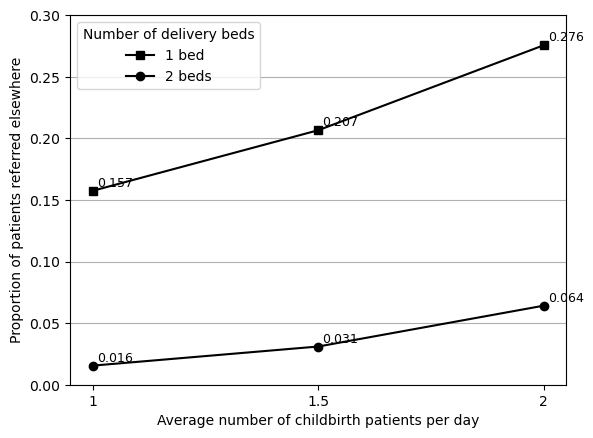

In this figure, we vary configuration 1 as follows:
Number of delivery beds: 2 or 3
Delivery arrivals: 1, 1.5 or 2 per day
1 = IAT 1440 (as in e.g. config1)
1.5 = 960 (as 720+240=960, and 960+480=1440)
2 = IAT 720 (as we did for Figure 3)
Set up
# To run modelimport PHC# To import results and produce figuresfrom reproduction_helpers import process_resultsimport pandas as pdimport osimport matplotlib.pyplot as pltimport matplotlib.ticker as tickerimport itertools# To speed up run timefrom multiprocessing import Pool'''# Additional package to record runtime of this notebookimport timestart = time.time()'''
'# Additional package to record runtime of this notebook\nimport time\nstart = time.time()'
# Paths to save image files tooutput_folder ='outputs'fig4_path = os.path.join(output_folder, 'fig4.png')
Run model
# TODO: Run with 100 replications# Varying number of childbirth casesarr_dict = [ {'delivery_iat': 1440,'rep_file': 'arr1440' }, {'delivery_iat': 1080,'rep_file': 'arr1080' }, {'delivery_iat': 960,'rep_file': 'arr960' }, {'delivery_iat': 720,'rep_file': 'arr720' }]# Varying the number of bedsbed_dict = [ {'delivery_bed_n': 1,'rep_file': 'bed1' }, {'delivery_bed_n': 2,'rep_file': 'bed2' }]
Create each combination for the reproduction
dict_list = []for arr in arr_dict:for bed in bed_dict:# Combine the dictionaries comb = {**arr, **bed}# Replace the file name comb['rep_file'] =f'''f4_{arr['rep_file']}_{bed['rep_file']}.xls'''# Save to list dict_list.append(comb)len(dict_list)
8
# Append 's_' to all itemsfor i, d inenumerate(dict_list): dict_list[i] = {f's_{k}': v for k, v in d.items()}# Preview exampledict_list[0]
Run the model (with parallel processing to reduce run time)
'''# Wrapper function to allow input of dictionary with pooldef wrapper(d): return PHC.main(**d)# Create a process pool that uses all CPUswith Pool(8) as pool: # Run PHC.main() using each of inputs from config pool.map(wrapper, dict_list)'''
'# Wrapper function to allow input of dictionary with pool\ndef wrapper(d):\n return PHC.main(**d)\n\n# Create a process pool that uses all CPUs\nwith Pool(8) as pool:\n # Run PHC.main() using each of inputs from config\n pool.map(wrapper, dict_list)'
Process results
data = process_results([i['s_rep_file'] for i in dict_list], xls=True)data.head()
f4_arr1440_bed1
f4_arr1440_bed2
f4_arr1080_bed1
f4_arr1080_bed2
f4_arr960_bed1
f4_arr960_bed2
f4_arr720_bed1
f4_arr720_bed2
OPD patients
33139.900000
33121.800000
33045.000000
33190.500000
33070.500000
33153.500000
33136.000000
33202.800000
IPD patients
185.500000
176.000000
184.600000
175.800000
182.100000
184.800000
182.800000
187.500000
ANC patients
364.300000
365.400000
367.700000
366.400000
352.000000
360.700000
372.600000
364.000000
Del patients
364.800000
359.800000
501.500000
486.600000
550.600000
546.800000
734.500000
733.600000
OPD Q wt
0.008448
0.008676
0.009153
0.010267
0.013715
0.012359
0.021986
0.015481
Create Figure 4
# Select series with proportion referreda4 = data.loc['prop_del_referred']# Reshape into appropriate format for plottingnames = ['1 (IAT 1440)', '1.5 (IAT 960)', '1.5 (IAT1080)', '2 (IAT 720)']bed1 = [a4['f4_arr1440_bed1'], a4['f4_arr960_bed1'], a4['f4_arr1080_bed1'], a4['f4_arr720_bed1']]bed2 = [a4['f4_arr1440_bed2'], a4['f4_arr960_bed2'], a4['f4_arr1080_bed2'], a4['f4_arr720_bed2']]data_4a = pd.DataFrame({'1 bed': bed1, '2 beds': bed2}, index=names)data_4a
1 bed
2 beds
1 (IAT 1440)
0.157425
0.015504
1.5 (IAT 960)
0.224336
0.036134
1.5 (IAT1080)
0.206583
0.031020
2 (IAT 720)
0.275549
0.064164
Function to create figure
def create_figure4(df):''' Produces figure 4 '''# Plot data ax = df.plot(kind='line', color='black')# Add markersfor l, ms inzip(ax.lines, itertools.cycle('so')): l.set_marker(ms) l.set_color('black') ax.legend(title='Number of delivery beds')# Add labels to each pointfor line in ax.lines: x_data = line.get_xdata() y_data = line.get_ydata()for x, y inzip(x_data, y_data): ax.annotate(f'{y:.3f}', xy=(x, y), xytext=(3, 3), textcoords='offset points', fontsize=9)# Adjust figure plt.xlabel('Average number of childbirth patients per day') plt.ylabel('Proportion of patients referred elsewhere') plt.ylim(0, 0.3) ax.xaxis.set_major_locator(ticker.MultipleLocator(1)) plt.grid(axis='y') ax.set_axisbelow(True)
Evaluating options
Due to discrepancies observed for 1.5 arrivals, I presumed that the difference could be in the IAT used, since the paper only provides the number of arrivals and not the IAT. I estimated the IAT to be 960, but I also tried using 1080 (which is equidistant between the 1 and 2 arrival IAT values), as I have not identified a formula for how these are produced, and have only been able to estimate.
From comparing the two options, 960 is closer for 2 beds whilst 1080 is closer for 1 bed. Since the difference is greatest for 1 bed, I opted to use that IAT.
# Input results from original and reproduced figurescomp = pd.DataFrame({'original': [0.021, 0.039, 0.039, 0.0599, 0.150, 0.195, 0.195, 0.270],'reproduced': data_4a.iloc[:, 1].to_list() + data_4a.iloc[:, 0].to_list()})comp['reproduced'] =round(comp['reproduced'], 3)# Find size of difference and % changecomp['diff'] = comp['reproduced'] - comp['original']comp['pct_change'] = comp.pct_change(axis=1).iloc[:, 1]*100comp
original
reproduced
diff
pct_change
0
0.0210
0.016
-0.0050
-23.809524
1
0.0390
0.036
-0.0030
-7.692308
2
0.0390
0.031
-0.0080
-20.512821
3
0.0599
0.064
0.0041
6.844741
4
0.1500
0.157
0.0070
4.666667
5
0.1950
0.224
0.0290
14.871795
6
0.1950
0.207
0.0120
6.153846
7
0.2700
0.276
0.0060
2.222222
Chosen figure (with IAT 1080)
# Drop 960data_4a_final = data_4a.drop(index='1.5 (IAT 960)')# Amend labels to match originaldata_4a_final.index = [x.split(' (')[0] for x in data_4a_final.index.to_list()]create_figure4(data_4a_final)plt.savefig(fig4_path, bbox_inches='tight')plt.show()

Run time
'''# Find run time in secondsend = time.time()runtime = round(end-start)# Display converted to minutes and secondsprint(f'Notebook run time: {runtime//60}m {runtime%60}s')'''
"# Find run time in seconds\nend = time.time()\nruntime = round(end-start)\n\n# Display converted to minutes and seconds\nprint(f'Notebook run time: {runtime//60}m {runtime%60}s')"